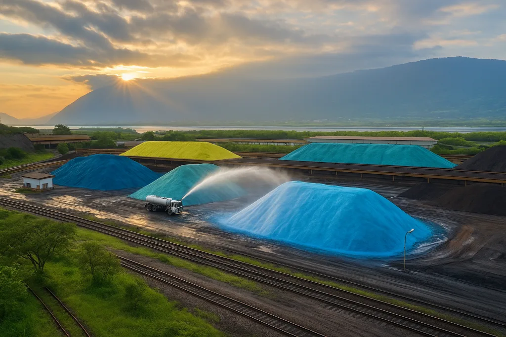

Polímeros ou Canhões de Névoa: Qual a Melhor Solução para o Controle de Poeira?
Uma atua no solo, a outra no ar. Entenda a diferença entre as duas tecnologias e quando combiná-las.

O particulado em suspensão é um desafio constante para setores como mineração, construção civil, siderurgia e processamento mineral. Ele afeta a saúde dos trabalhadores, reduz a visibilidade operacional, acelera o desgaste de equipamentos e gera penalidades ambientais em caso de não conformidade. Entre as soluções disponíveis, duas se destacam por atuarem de formas complementares: os polímeros supressores de poeira e os canhões de névoa. Embora ambos combatam a poeira, eles agem em momentos e frentes diferentes da operação, e entender essa diferença é decisivo para escolher a tecnologia certa.
O que são os polímeros supressores de poeira
Os polímeros são produtos químicos formulados para vias não pavimentadas e pátios industriais. Compostos por macromoléculas de origem vegetal, criam uma camada protetora quando diluídos e aplicados sobre o solo, reduzindo a emissão de poeira causada pelo tráfego de veículos e prevenindo a erosão da superfície.
Ao serem aplicados sobre o solo, os polímeros formam ligações entre as partículas de solo seco, criando uma crosta estabilizadora que resiste ao impacto mecânico dos pneus. Essa camada é especialmente eficaz em vias com alto volume de tráfego de caminhões pesados, onde a ressuspensão de poeira pelo movimento seria contínua sem tratamento adequado.
Vantagens do uso de polímeros
- Redução da poeira gerada por veículos pesados e equipamentos em movimento
- Economia de água em comparação à irrigação convencional de vias
- Estabilização química do solo, reduzindo a erosão
- Maior segurança viária, minimizando buracos e variações de nível
A limitação dos polímeros está no seu modo de ação: eles atuam apenas sobre o solo, prevenindo a ressuspensão de poeira causada pelo tráfego. Não eliminam, porém, a poeira já em suspensão no ar, como a gerada em pontos de carregamento, descarregamento e movimentação de materiais.
Tempo de eficácia e reaplicação
Outro ponto a considerar é a durabilidade do tratamento com polímeros. A camada formada sobre o solo se degrada progressivamente com o tráfego intenso, chuva e exposição solar, exigindo reaplicações periódicas para manter a eficácia. O intervalo de reaplicação varia conforme o volume de tráfego, o tipo de solo e as condições climáticas da região, o que exige planejamento e monitoramento contínuo por parte da operação.
Em operações com estação chuvosa definida, como ocorre em grande parte do Brasil, é comum que o tratamento com polímeros precise ser renovado no início de cada período seco, quando a poeira ressurge como problema relevante com a redução natural da umidade do solo.
Canhões de névoa: a solução para a poeira em suspensão
Diferente dos polímeros, os canhões de névoa atuam diretamente sobre a poeira já dispersa no ar. O equipamento pulveriza microgotículas de água que se misturam às partículas em suspensão, promovendo sua precipitação e evitando a dispersão pelo vento.
O princípio físico por trás dessa ação é a colisão e aglomeração entre a gotícula de água e a partícula sólida. Quando bem calibrado, o tamanho da gota pulverizada maximiza a probabilidade de colisão com partículas finas em suspensão, pequena o suficiente para permanecer no ar por tempo suficiente e se encontrar com a poeira, mas grande o bastante para, ao se aglutinar com a partícula, ganhar peso suficiente para precipitar rapidamente ao solo. Esse equilíbrio de engenharia é o que diferencia um sistema de supressão eficiente de uma simples aspersão de água.
Para entender o alcance técnico que diferencia os canhões de névoa de alternativas mais simples, recomendamos a leitura do artigo sobre canhão de névoa versus aspersores convencionais, que explica em detalhes por que o tamanho e a distribuição das gotículas fazem toda a diferença na eficiência da supressão.
Onde os canhões de névoa são mais eficientes
- Carregamento e descarregamento de caminhões
- Correias transportadoras
- Pátios de estocagem, tema aprofundado em nosso artigo sobre controle de poeira em pilhas de materiais
- Frentes de lavra em mineração a céu aberto
- Britadores e peneiras
Vantagens dos canhões de névoa Suppress
- Redução imediata da poeira em suspensão, melhorando a qualidade do ar
- Cobertura de grandes áreas, com alcance de até 150 metros nos modelos de maior porte como o SP-150
- Baixo consumo de água, garantindo eficiência sustentável
- Modelos móveis e fixos, adaptáveis à operação
Polímeros x canhões de névoa: qual escolher?
A escolha depende do tipo de poeira que precisa ser controlada. Os polímeros são indicados para o controle de poeira gerada pelo tráfego em vias não pavimentadas, com mobilidade limitada após a aplicação. Já os canhões de névoa Suppress são indicados para a poeira já em suspensão no ar, com alta cobertura e opções móveis ou fixas conforme a necessidade da operação.
Na prática, essas tecnologias não competem entre si, elas se complementam. Uma operação que combina polímeros nas vias de acesso com canhões de névoa nos pontos críticos de geração de poeira obtém controle mais abrangente, cobrindo tanto a fonte no solo quanto o particulado já disperso no ar. Esse tipo de abordagem combinada é especialmente relevante em operações de mineração, como discutimos em poeira na mineração: riscos e normas de controle.
O uso combinado de polímeros e canhões de névoa garante controle abrangente de poeira, atuando simultaneamente no solo e no ar.
Aspectos econômicos: custo total de propriedade
Uma análise de custo-benefício entre as duas tecnologias precisa considerar o custo total de propriedade ao longo do tempo, não apenas o investimento inicial. Polímeros têm custo recorrente de produto e aplicação, mas não exigem capital de equipamento. Canhões de névoa demandam investimento inicial em equipamento, com custo operacional basicamente de energia elétrica e água.
Para operações de grande porte com vias internas extensas, o custo de tratar toda a malha viária com polímeros pode ser expressivo, e nesse caso, o uso de polímeros apenas nas vias de maior tráfego, combinado com canhões de névoa nos pontos críticos de emissão, costuma representar o melhor equilíbrio econômico. Para entender os impactos financeiros mais amplos de não controlar a poeira, vale consultar nosso artigo sobre o custo real da poeira para a empresa.
Como avaliar qual estratégia priorizar primeiro
Para operações que estão estruturando seu plano de controle de particulado pela primeira vez, uma forma prática de priorizar é mapear os pontos de geração de poeira. Se a maior parte do problema vem do tráfego de veículos em vias internas não pavimentadas, os polímeros tendem a oferecer o retorno mais imediato. Se a geração se concentra em pontos de transferência de material, silos, britadores, correias, pátios de estocagem, os canhões de névoa costumam trazer resultado mais perceptível em menos tempo.
Operações de maior porte, no entanto, raramente conseguem resolver o problema com uma única tecnologia isolada. Conhecer a linha completa de canhões de névoa Suppress ajuda a dimensionar corretamente o investimento conforme a escala e a complexidade da operação.
Conclusão
A supressão eficiente de poeira garante segurança aos trabalhadores, conformidade ambiental e redução de custos operacionais. Enquanto os polímeros reduzem a poeira gerada nas vias, eles não eliminam as partículas já suspensas no ar, papel que os canhões de névoa Suppress cumprem com eficiência, assegurando ambientes mais limpos e seguros. A decisão entre as duas tecnologias, ou a combinação estratégica de ambas, deve ser guiada por um diagnóstico técnico da operação, mapeando onde a poeira é gerada, em que volume e quais são as exigências regulatórias aplicáveis ao setor.
Perguntas Frequentes
Posso usar polímeros e canhões de névoa ao mesmo tempo na mesma operação?
Sim, e essa é inclusive a abordagem mais recomendada para operações de maior porte. Os polímeros controlam a poeira gerada pelo tráfego em vias não pavimentadas, enquanto os canhões de névoa atuam sobre a poeira já em suspensão no ar, cobrindo frentes diferentes do mesmo problema.
Os polímeros eliminam a necessidade de canhões de névoa?
Não. Os polímeros atuam apenas sobre o solo, prevenindo a ressuspensão de partículas pelo tráfego de veículos. Eles não capturam a poeira que já está dispersa no ar, gerada em pontos como carregamento, descarregamento e britagem, função que cabe aos canhões de névoa.
Com que frequência os polímeros precisam ser reaplicados?
O intervalo varia conforme o volume de tráfego, o tipo de solo e as condições climáticas locais. Operações com tráfego intenso ou exposição a chuvas frequentes tendem a precisar de reaplicações mais constantes para manter a eficácia da camada protetora.
Quer saber qual tecnologia é ideal para a sua operação?
Fale com nossos engenheiros e descubra a combinação certa de soluções.
Solicitar Proposta